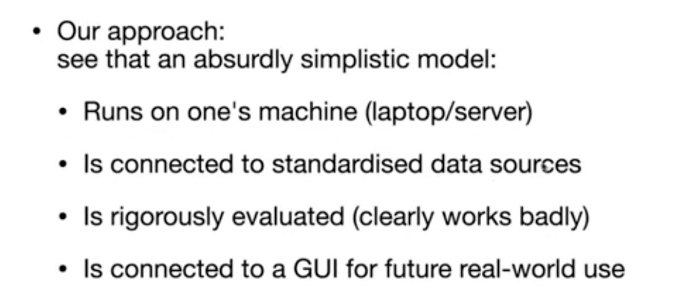

A climate-informed forecasting and decision-support tool for Zimbabwe and Southern Africa — combining epidemiological surveillance, climate indicators, and AI-driven risk models to enable early public health action.
Open the AppDeveloped by Robert Selemani · Powered by CHAP